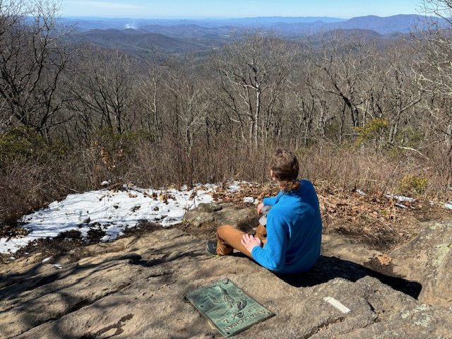
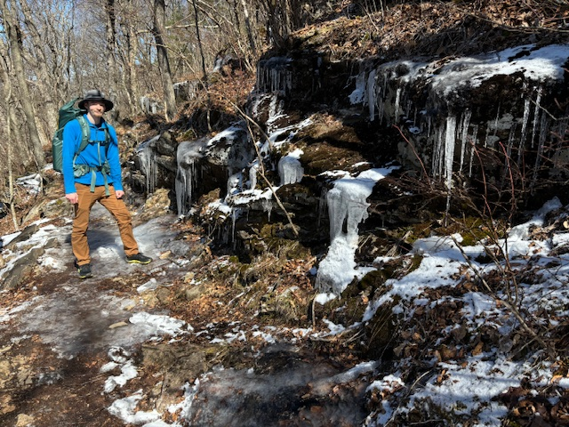

Day 1
current AT mileage: 12.2
mileage remaining: 2185.2
Although weariness soaks my bones already, my second home in nature calls to me. The stoic indifference of the rocks, trees, water, and sky steel my soul against the torrent of time and life ticking by at their incessant rate. When all is melted away but the bare necessities of food, water, and shelter, and such a simple goal put forth: north; the knot of existence becomes a strand as plain as a line on a map.
Today was a bit chilly, but not too bad to hike in. The forest is beautiful here in Georgia, plenty of rhododendrons, ferns, and mosses to add pops of green, as well as a dusting of snow and ice to add interest. We took a short detour to the beautiful long creek waterfall, certainly a highlight of the day.

At mile 10 I encountered Fresh Ground, a well known trail angel, who most generously fed me hot chicken noodle soup, a delightful buttered toast, and a steamy mug of hot cocoa, which thoroughly pepped my step toward Cooper's gap where I was whisked away from the bitter cold night to a warm hotel, my last taste of luxury for a while.